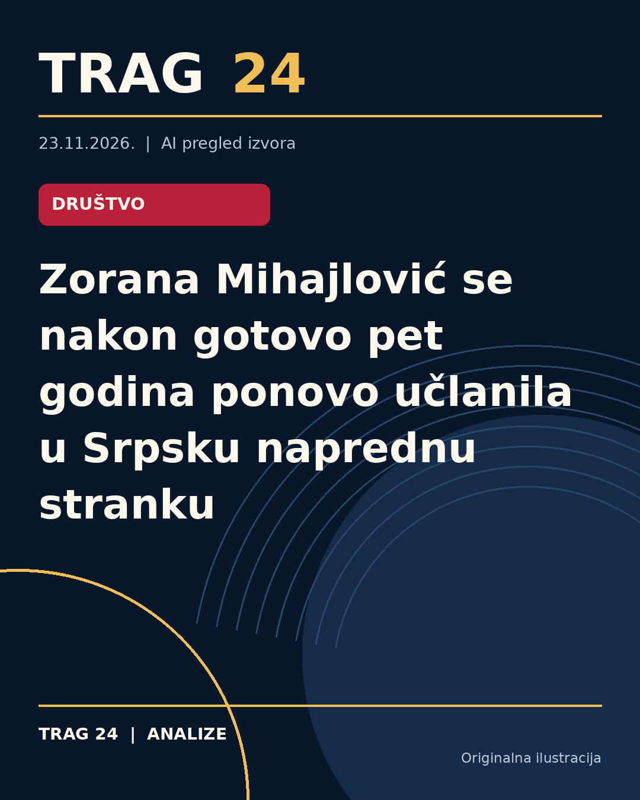

Zorana Mihajlović se nakon gotovo pet godina ponovo učlanila u Srpsku naprednu stranku

ŠTA SE DOGODILO
Zorana Mihajlović, bivša ministarka i potpredsednica Srpske napredne stranke (SNS), nakon skoro pet godina od izlaska iz stranke, ponovo se učlanila u SNS. Povratak Mihajlović u stranku najavljeno je i potvrđeno u prostorijama SNS-a u Novom Beogradu, gde ju je dočekao predsednik SNS Aleksandar Vučić.
HRONOLOGIJA
Mihajlović je prethodno bila potpredsednica Vlade Republike Srbije i ministarka u nekoliko mandata, uključujući period od 2014. do 2016. godine, te ministarka energetike i zaštite životne sredine ranije. Napustila je SNS oko 2018. godine i od tada nije bila član stranke. Povratak u SNS desio se tokom 2023. godine i zvanično je najavljen u javnosti kroz izjave Vučića i same Mihajlović.
ŠTA NAVODE IZVORI
Aleksandar Vučić je izrazio poštovanje prema Mihajlović zbog njene hrabrosti i borbenosti u teškim političkim uslovima, naglašavajući da ceni ljude koji se u kriznim situacijama ponašaju hrabro. Mihajlović je izjavila da je trenutak težak i da želi da pojača svoju podršku stranci i pomogne koliko može. Izvori navode da je njen povratak označen kao značajan za SNS, posebno u kontekstu aktuelnih izazova i pozicije stranke.
ŠTA JE POTVRĐENO
Potvrđeno je da je Zorana Mihajlović ponovo članica Srpske napredne stranke i da je to bio dogovor postignut i ozvaničen u prostorijama SNS-a. Njena funkcija u stranci i eventualna dalja aktivnost u političkom životu moguća su, ali nije precizirano konkretno mesto ili pozicija u okviru stranačkih organa ili institucija.
ŠTA NIJE POTVRĐENO
Nije potvrđeno zašto je Mihajlović napustila SNS pre pet godina, niti su iznete detaljnije informacije o razlozima njenog povratka sada. Takođe, nisu navedeni konkretni planovi ili promene koje bi njen povratak doneo u stranci ili državnoj politici. Ne postoje potvrđeni detalji o tome da li će prethodni sukobi ili neslaganja unutar SNS biti razrešeni.
ŠTA OSTАJE OTVORENO: Ostaje pitanje na koji način će se povratak Zorane Mihajlović odraziti na unutrašnju dinamiku SNS-a, kao i kako će je prihvatiti članstvo i birači. Takođe, nije poznato da li će ona zauzeti neku funkciju u aktuelnoj političkoj strukturi ili će biti angažovana u specifičnim projektima ili aktivnostima unutar partije. Dalji razvoj ove situacije zavisiće od budućih izjava, poteza same Zorane Mihajlović i rukovodstva SNS-a.
Izvori
- https://www.danas.rs/vesti/politika/zorana-mihajlovic-se-vratila-u-sns/
- https://www.blic.rs/vesti/politika/zorana-mihajlovic-se-posle-gotovo-pet-godina-vratila-u-sns/xd1qjhh
- https://insajder.net/vesti/zorana-mihajlovic-ponovo-u-sns-u
Ova analiza je pripremljena uz pomoć veštačke inteligencije na osnovu javno dostupnih izvora. Navodi izvora nisu nužno nezavisno potvrđeni.